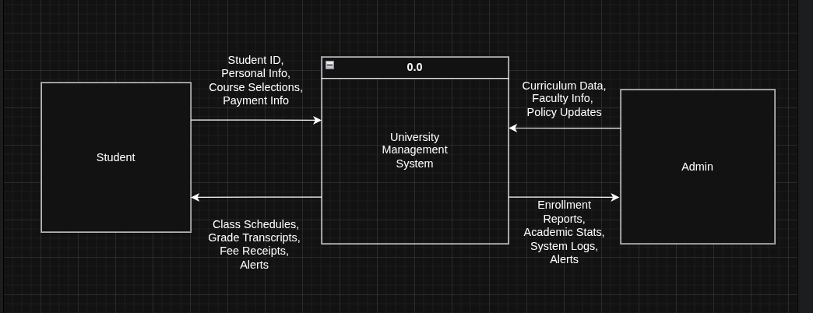

Level 0 DFD: Context Diagram

Description:
The Level 0 DFD, or Context Diagram, provides a high-level overview of the University Management System (UMS) and its interactions with external entities. It shows the system as a single process, 0.0, interacting with two external entities: Student and Admin.
- Student interacts with the UMS to provide Personal Details, Course Requests, and Fee Payments. In return, the UMS provides the Student with Schedules, Grades, and Notifications.
- Admin interacts with the UMS to provide Course Info, Rules/Policies, and Faculty Details. The UMS provides the Admin with Reports, Statistics, and System Alerts.
Key System Processes
1.0 Manage Admissions & Profile
This process is responsible for handling all aspects of student admissions and managing their personal profiles within the University Management System. It receives Application Data and Updated Profile information from the Student. This data is then stored and retrieved from the Student DB (D1). The system ensures that student records are accurately maintained from their initial application through their academic journey.
2.0 Manage Academics & Registration
The "Manage Academics & Registration" process is central to the academic operations of the university. It handles Course Enrollment and Schedule requests from students. This process interacts with the Course DB (D2) to access course details and the Student DB (D1) to update student registration information. It also facilitates the input of Course Info, Rules/Policies, and Faculty Details by the Admin, ensuring that academic offerings are current and correctly managed.
3.0 Manage Examinations & Grades
This process focuses on the administration of examinations and the recording of student grades. It receives Exam Scores and generates Grade Reports, which are accessible to the Student and managed by the Admin. Data flows from and to the Grade DB (D3) for storing grade records, and it interacts with the Course DB (D2) for course-related grading information. This ensures accurate and timely dissemination of academic performance.
4.0 Manage Fees & Finance
The "Manage Fees & Finance" process handles all financial transactions related to student fees. It processes Fee Payments from the Student and manages Payment Details and Receipts. The Admin oversees financial operations, including potentially inputting financial rules and generating reports. This process primarily interacts with the Finance DB (D4) for financial records and the Student DB (D1) for student-specific billing and payment histories.